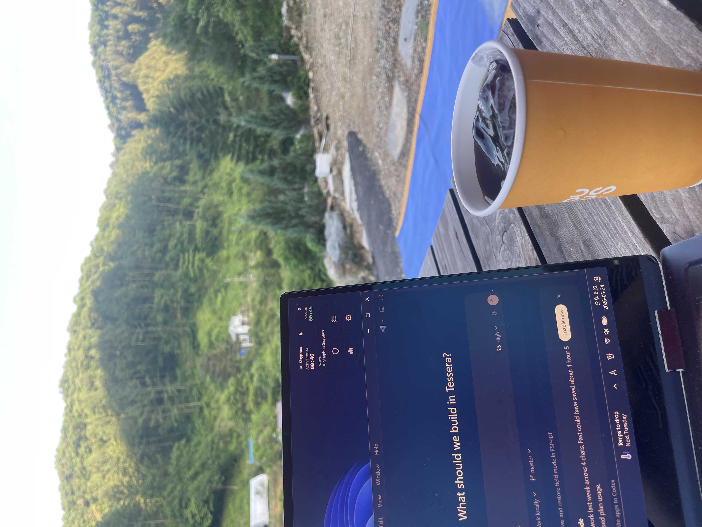

Sisyphus
AI augmented focus tracker and game-launch speed bump
Available at: sisyphusfocus.site
Issue / Solution
The Issue: Digital distraction and impulsive game launches (like League of Legends) are friction-free, often triggered automatically by muscle memory when a user encounters a small mental barrier during work. Standard website blockers or lock-down tools are overly coercive, triggering a defensive reaction where the user simply uninstalls the blocker, rather than training their focus habits.
The Solution: I built Sisyphus, a lightweight Windows utility that acts as a deliberate "speed bump." Using Windows Image File Execution Options (IFEO) registry hooks, Sisyphus intercepts game launches before the process executes. Instead of locking down the PC, it displays a checklist dashboard. The user must check off their actual work items before the game opens, introducing a mindful delay that breaks the automatic loop of distraction.
Overview
Sisyphus is a Windows desktop app that intercepts impulsive game launches and displays a todo checklist first. Once every item is checked, the original game launches normally. It was built for League of Legends, but it can block any `.exe`.
System Architecture & Windows Internals
Sisyphus uses native Windows internals to achieve fail-safe executable interception. Rather than running a CPU-heavy background watchdog process, it registers itself directly under Image File Execution Options (IFEO) in the Windows Registry.
Process Interception Flow (IFEO Registry Hook)

What I Built
- A compact WPF dashboard with custom terminal-style windows and popups.
- IFEO-based executable blocking that works without a watchdog service.
- A launcher gate that receives the original executable path, shows todos, and launches the game only after completion.
- Todo targets for software paths, websites, folders, and optional music URLs.
- Foreground activity tracking with day, week, month, year, and custom-range analytics.
Windows Internals
Sisyphus writes a `Debugger` value under Image File Execution Options for the blocked executable name. When Windows tries to launch that executable, it runs `Sisyphus.Launcher.exe` first. To prevent recursion, the launcher starts the real app with a bypass environment variable and debugger-style process creation.
Design Choices
The app is intentionally transparent: config is plain JSON under `%APPDATA%`, blocks are removable from the UI, and there is no password or anti-tamper mechanism. The goal is friction and visibility, not coercive control.
Stack
.NET 8, WPF, Windows Registry, IFEO, JSON persistence, foreground window tracking, Inno Setup, x64 Windows packaging.